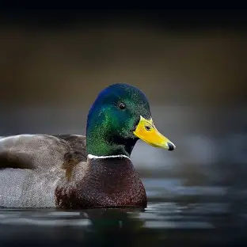

-

Name: Mallard-(Anas platyrhynchos)
A migratory duck seen in wetlands and lakes.
-
Name: Northern Pintail-(Anas acuta)
A slender duck found in open water bodies.
-

Name: Common Teal-(Anas crecca)
A small duck that migrates to Nepal’s wetlands.
-
Name: Bar-headed Goose-(Anas crecca)
A high-altitude migratory bird seen in lakes and rivers.
-

Name: Ruddy Shelduck-(Tadorna ferruginea)
A striking orange-colored waterfowl.
-
Name: Black Stork-(Ciconia nigra)
A winter visitor found in wetlands and riverbanks.
-
Name: Himalayan Griffon-(Gyps himalayensis)
A large vulture soaring over mountains and valleys.
-
Name: Steppe Eagle-(Aquila nipalensis)
A migratory raptor that arrives from Central Asia.
-
Name: Wallcreeper-(Tichodroma muraria)
Description: A unique red-winged bird found on rocky cliffs.
-
Name: White-throated Bush Chat-(Saxicola insignis)
A rare winter visitor found in grasslands.
-
Name: Eurasian Wryneck-(Jynx torquilla)
A cryptic woodpecker species that blends into trees.
-
Name: Grey-headed Woodpecker-(Picus canus)
A shy but beautiful forest bird.
-
Name: White Wagtail-(Motacilla alba)
A common winter visitor seen in urban and rural areas.
-
Name: Brown Dipper-(Cinclus pallasii)
Found near fast-flowing rivers in hilly and mountainous areas.
-
Name: Great Cormorant-(Phalacrocorax carbo)
A large waterbird seen drying its wings near lakes and rivers.